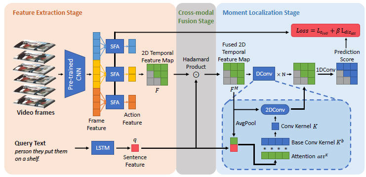
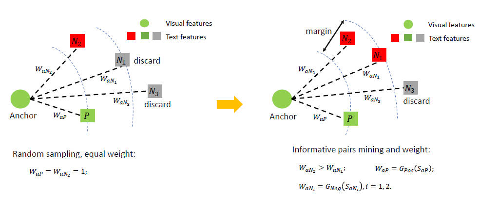
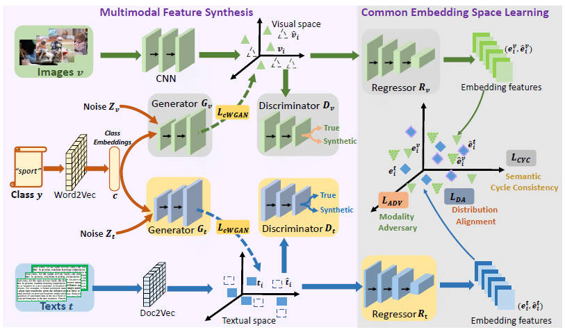
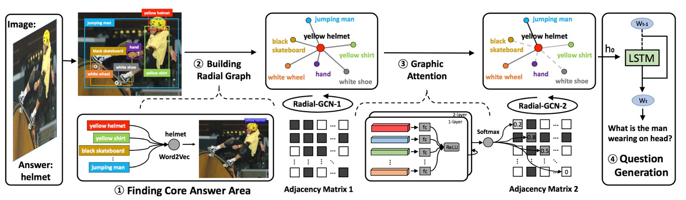
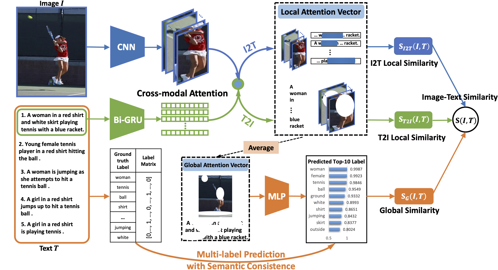
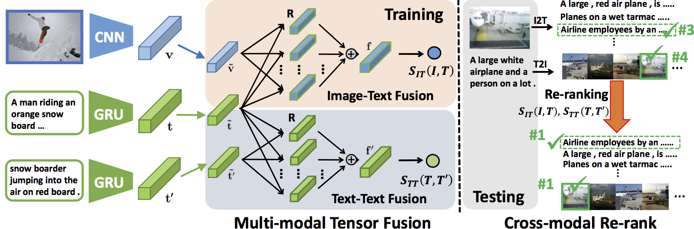
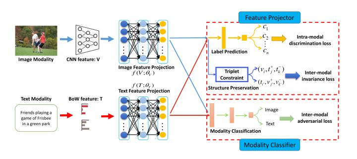
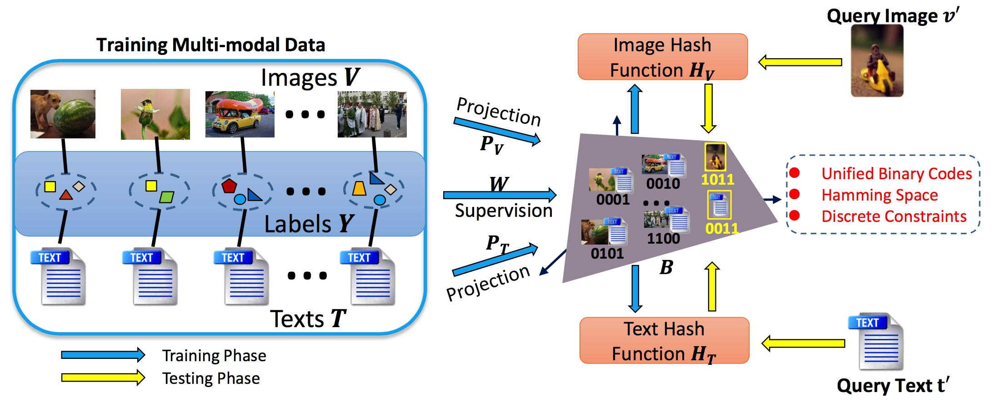

|
Xing Xu
About Me
I am currently a Researcher with Center of Future Media & School of Computer Science and Engineering, University of Electronic of Science and Technology of China (UESTC), China. I received the B.E. and M.E. degrees from Huazhong University of Science and Technology, China, in 2009 and 2012, respectively, and the Ph.D. degree from Kyushu University, Japan, in 2015. Before joining UESTC, I worked as a Research Technician at Kyushu University (2015-2016).
My research interests mainly focus on multimedia information retrieval, especially cross-modal retrieval and knowledge transfer in integrating language and vision. I have published 100+ academic papers (50+ in CVPR, ICCV, ACM Multimedia, ACM SIGIR, AAAI, TPAMI, TIP, TMM, TCSVT, TCYB, TNNLS).
I am the recipient of the Best Paper Award at ACM MM 2017, the World's FIRST 10K Best Paper Award - Platinum Award at IEEE ICME 2017, the Best Paper Award at ISAIR 2020 and IEEE Multimedia Prize Paper Award 2020.
In 2019, I received the Outstanding Young Researcher Award from the IEEE Computer Society, Special Technical Committee on Big Data.
欢è¿�有志äº�ä»�事计算机视觉ã€�人工智能方å�‘å¦æœ¯ç ”究和算法开å�‘çš„å�Œå¦æŠ¥è€ƒç ”究生~ å�Œæ—¶ä¹Ÿæ¬¢è¿�计划ä¿�ç ”å’Œå‡ºå›½çš„å�Œå¦æ��å‰�å�‚ä¸�å®�éªŒå®¤ç§‘ç ”è®ç»ƒ~
News
2022/07/02 – 4 papers about Adversarial Attack on Image Retrieval, Visual-Audio Event Localization, Zero-shot Sketch-based Image Retrieval, Visual-Audio Fine-Grained Recognition are accepted by ACM Multimedia 2022! Congratulations to Siyuan, Xun, Kai and Xiaoyu! [NEW]
Highlighted Research
|
 |
Cross-Modal Dynamic Networks for Video Moment Retrieval With Text Query
Gongmian Wang, Xing Xu, Fumin Shen, Huimin Lu, Yanli Ji, Heng Tao Shen.
IEEE Transactions on Multimedia, 2022.
[ link ]
[ code ]
|
|
 |
Universal Weighting Metric Learning for Cross-Modal Retrieval
Jiwei Wei, Yang Yang, Xing Xu, Xiaofeng Zhu, Heng Tao Shen.
IEEE Transactions on Pattern Analysis and Machine Intelligence, 2021.
[ link ]
[ code ]
|
|
 |
Joint Feature Synthesis and Embedding: Adversarial Cross-modal Retrieval Revisited
Xing Xu, Kaiyi Lin, Yang Yang, Alan Hanjalic, Heng Tao Shen.
IEEE Transactions on Pattern Analysis and Machine Intelligence, 2020.
[ link ]
[ code ]
|
|
 |
Radial Graph Convolutional Network for Visual Question Generation
Xing Xu, Tan Wang, Yang Yang, Alan Hanjalic and Heng Tao Shen.
IEEE Transactions on Neural Networks and Learning Systems, 2020.
[ link ]
[ code ]
|
|
 |
Cross-Modal Attention with Semantic Consistence for Image-Text Matching
Xing Xu, Tan Wang, Yang Yang, Lin Zuo, Fumin Shen and Heng Tao Shen.
IEEE Transactions on Neural Networks and Learning Systems, 2020.
[ link ]
[ code ]
|
|
 |
Matching Images and Text with Multi-modal Tensor Fusion and Re-ranking
Tan Wang, Xing Xu, Yang Yang, Alan Hanjalic, Heng Tao Shen and Jingkuan Song.
ACM International Conference on Multimedia, 2019. (*Corresponding Author)
[ link ]
[ code ]
|
|
 |
Adversarial Cross-Modal Retrieval
Bokun Wang, Yang Yang, Xing Xu, Alan Hanjalic and Heng Tao Shen.
ACM International Conference on Multimedia, 2017. Best Paper Award
[ link ]
[ code ]
|
|
 |
Learning Discriminative Binary Codes for Large-scale Cross-modal Retrieval
Xing Xu, Fumin Shen, Yang Yang, Heng Tao Shen, Xuelong Li.
IEEE Transactions on Image Processing (TIP), 26:5, 2494-2507, 2017. ESI Highly Cited Paper
[ link ]
[ code ]
|
Awards
å¦æœ¯æ–°äººå¥–, 电å�科技大å¦, 2020
Best Paper Award, the 5th International Symposium on Artificial Intelligence and Robotics (ISAIR2020)
IEEE Multimedia Prize Paper Award (2020)
Outstanding Young Researcher Award, IEEE Computer Society, Special Technical Committee on Big Data, 2019
Best Paper Award, the 25th ACM International Conference on Multimedia (MM 2017)
World’s FIRST 10K Best Paper Award-Platinum Award, the 18th IEEE International Conference on Multimedia & Expo (ICME 2017)
Best Student Paper Award, the 28th Edition of the Australasian Database Conference (ADC 2017)
Excellent Poster Award, the 21th Japan-Korea Joint Workshop on Frontiers of Computer Vision (FCV 2015)
Teaching
Advanced Computer Vision (Graduate)
Computer Vision and Pattern Recognition (Undergraduate)
Principle and Application of Microcomputer (Foreign Undergraduate)
Principle and Application of Microcomputer (Undergraduate)
|